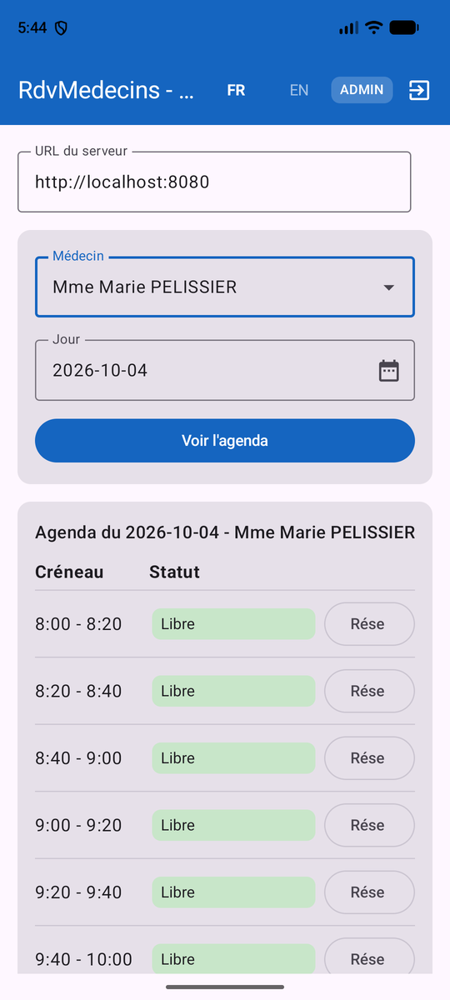

6. Hoofdstuk 5 - De app uitvoeren: emulator, telefoon, APK
6.1. Eén doelplatform: Android
Hoofdstuk 5 van de Flutter-cursus liet zien hoe één broncode compileert naar drie families van doelplatforms: mobiel, desktop en web. Dat is hier niet het geval: de client in dit document is een Android-app – en alleen Android. In plaats daarvan gebruikt hij rechtstreeks de hulpmiddelen en bibliotheken van het platform ([Gradle], [Android Studio], [ViewModel], [SharedPreferences]...), zonder abstractielaag. In de laatste paragraaf van dit hoofdstuk wordt uitgelegd wat er nodig zou zijn om ook iOS, de desktop en het web als doel te hebben.
De commando’s in dit hoofdstuk gebruiken het hulpprogramma [adb] en de Gradle-wrapper. Als op Windows de mappen [platform-tools] en [emulator] van de SDK niet in [PATH] staan, vervangt u [adb] door [& "$env:LOCALAPPDATA\Android\Sdk\platform-tools\adb.exe"] (zie Hoofdstuk 1).
6.2. Emulator als doelplatform
Dit is het doelplatform dat in heel Hoofdstuk 4 is gebruikt. Vanuit Android Studio: selecteer de emulator in de lijst met apparaten en kies vervolgens [Run]. Vanaf de opdrachtregel, in de projectmap:
6.2.1. De netwerkvalkuil: localhost verwijst niet meer naar de ontwikkel-pc
Dit is DÉ belangrijke bijzonderheid bij mobiele ontwikkeling, los van Kotlin of Compose: [localhost] (of [127.0.0.1]) verwijst in het veld „Server URL” naar de machine waarop de code draait. De emulator is echter een VIRTUELE machine, los van de ontwikkel-pc waarop de [NestJS]-server draait, ook al lijken beide „op dezelfde computer te staan”. Er zijn twee oplossingen:
- het speciale adres [http://10.0.2.2:8080]: specifiek voor de officiële Android-emulator, wordt het omgeleid naar de [localhost] van de hostmachine. Dit is de standaardwaarde van het veld „Server URL” (zie [SettingsService.kt]);
- het commando [adb reverse tcp:8080 tcp:8080], gevolgd door de URL [http://localhost:8080]. [adb reverse] maakt een tunnel: elke verbinding van het apparaat naar de EIGEN poort 8080 wordt door [adb] doorgestuurd naar poort 8080 van de computer. De tunnel verdwijnt wanneer de emulator stopt (of wanneer de [adb]-server opnieuw start): u moet het commando dan opnieuw uitvoeren.
De eerste oplossing is de eenvoudigste. Op de computer waarop dit document is geschreven werkte ze echter niet: de verbinding met [10.0.2.2:8080] mislukte na een time-out van 10 seconden, terwijl de server normaal antwoordde op [localhost]. Dit soort probleem hangt af van de netwerkconfiguratie van de pc (firewall, VPN, virtualisatiesoftware): [adb reverse] omzeilt dit probleem, omdat het verkeer dan via [adb] loopt in plaats van via het virtuele netwerk van de emulator. De melding die de app toont („Incorrect login or password.”) zegt weinig; de exacte oorzaak is te vinden in het Android-logboek, dankzij de aanroepen van [Log.w(...)] door de client (het tabblad [Logcat] in Android Studio, gefilterd op [RdvMedecins], of het commando [adb logcat -s RdvMedecins]):
Het commando [adb reverse] en de URL [http://localhost:8080] (opgeslagen door [SettingsService]) losten het probleem op: dit is de configuratie die voor alle schermafbeeldingen in Hoofdstuk 4 is gebruikt.
6.3. Doelplatform: telefoon
De telefoon die in Hoofdstuk 1 is ingericht (ontwikkelaarsopties, USB-foutopsporing) verschijnt in [adb devices] en in de apparatenlijst van Android Studio: hij werkt precies als de emulator ([Run] of [gradlew installDebug]). Alleen de URL van de server verandert:
- telefoon die via een USB-kabel is aangesloten: het commando [adb reverse tcp:8080 tcp:8080] werkt ook met een echte telefoon, en de URL [http://localhost:8080] bereikt dan via de kabel de server op de pc. Dit is de eenvoudigste oplossing;
- Telefoon in hetzelfde wifinetwerk als de pc: gebruik het LOKALE IP-adres van de pc in dat netwerk (bijvoorbeeld [http://192.168.1.48:8080]; het commando [ipconfig] toont het in Windows), nooit [localhost] of [10.0.2.2], want in dit geval verwijzen beide naar de telefoon zelf. De firewall op de pc moet dan inkomende verbindingen op poort 8080 toestaan (Windows vraagt u dit te doen wanneer u Node.js voor het eerst start).
De [NestJS]-server luistert op alle netwerkinterfaces van de pc ([0.0.0.0]): aan de serverkant zijn geen wijzigingen nodig.
6.4. Twee beperkingen die specifiek voor mobiele apparaten gelden
6.4.1. Onversleuteld HTTP-verkeer
Vanaf Android 9 (API 28) mag een app standaard niet meer communiceren via HTTP in „plaintext” ([http://], onversleuteld): alleen [https://] is toegestaan. Omdat de server voor deze cursus op gewoon HTTP luistert, declareert het manifest van de client de uitzondering [android:usesCleartextTraffic="true"] (zie Hoofdstuk 4). Zonder deze uitzondering mislukt elk verzoek met de exception [CLEARTEXT communication to 10.0.2.2 not permitted by network security policy].
Deze toestemming geldt voor ALLE servers. Een meer fijnmazige configuratie is mogelijk met een bestand [res/xml/network_security_config.xml] dat gewone HTTP alleen voor bepaalde hostnamen toestaat:
Het bestand wordt in het manifest gedeclareerd met het attribuut [android:networkSecurityConfig="@xml/network_security_config"] van de tag [<application>]. Dit document gebruikt het niet: het IP-adres van een pc in een wifinetwerk is niet vooraf bekend. In beide gevallen gelden deze instellingen alleen voor ontwikkeling: in productie zou de server beschikbaar zijn via [https://] (bijvoorbeeld achter een „reverse proxy” zoals Nginx), waardoor elke uitzondering overbodig zou zijn.
6.4.2. Toestemming voor netwerktoegang
Zonder de regel [<uses-permission android:name="android.permission.INTERNET" />] in het manifest mislukt het eerste verzoek en wordt een [SocketException: socket failed: EPERM (Operation not permitted)]-exception gegooid (of een [SecurityException: Permission denied (missing INTERNET permission?)]-exception wanneer de URL een hostnaam bevat). Dit wordt vaak over het hoofd gezien: het projectsjabloon van Android Studio bevat deze regel niet.
6.5. Schermrotatie
Als u de telefoon draait (of de emulator, met de rotatieknoppen in de zijbalk), wordt de activity VERNIETIGD en daarna opnieuw AANGEMAAKT (zie Hoofdstuk 3). De client vangt dit op dankzij drie keuzes uit Hoofdstuk 4:
- de services worden gebouwd door [RdvMedecinsApplication], die niet opnieuw wordt aangemaakt;
- de toestand van het scherm (artsen, patiënten, agenda, het tijdslot dat op dat moment wordt geboekt) wordt bewaard in [AppViewModel], dat door Android wordt behouden;
- kleine toestanden van de interface (de inloggegevens die worden ingevoerd, de geselecteerde arts en dag, de in het dialoogvenster gekozen patiënt) worden bewaard in [rememberSaveable].
De volgende schermafbeeldingen zijn gemaakt met het boekingsdialoogvenster open: eerst in landschapsstand, daarna weer in staande stand. Het dialoogvenster, de agenda en de geselecteerde arts en dag zijn er nog steeds:


In landschapsstand is het scherm meer dan 600 dp breed: de titelbalk toont de volledige titel en de naam van de gebruiker, en [DoctorDayPicker] rangschikt de drie elementen op één regel:

Om de waarde van deze keuzes te beoordelen, kunnen we het tegenovergestelde proberen: vervang in [App.kt] [val vm = viewModel { AppViewModel(auth, api) }] door [val vm = remember { AppViewModel(auth, api) }]. Na een rotatie verdwijnt de agenda en moet de zoekopdracht opnieuw worden uitgevoerd: [remember] overleeft het opnieuw aanmaken van de activity niet.
6.6. Een smal scherm: de valkuil van de indeling
Een telefoon in staande stand is slechts ongeveer 400 dp breed. De eerste versie van [ScheduleView.kt] struikelde, net als die van de Flutter-client, over deze breedte. Elke rij van de agenda verdeelde de beschikbare breedte over de drie kolommen met vaste gewichten: 30% voor het tijdstip, 45% voor de status en 25% voor de knop ([Modifier.weight(0.25f)]). Op de telefoon, in de Franse interface, was 25% van de rij niet genoeg voor het label „Réserver”, dat werd afgekapt tot „Rése”:


De correctie (schermafbeelding rechts; zie [ScheduleView.kt] in Hoofdstuk 4): de knop heeft geen gewicht meer en neemt de breedte van zijn tekst in; het tijdstip heeft een vaste breedte; de status neemt de resterende breedte in ([Modifier.weight(1f)]). Hieruit volgen twee regels, dezelfde als voor de Flutter-client:
- Ga nooit uit van een bepaalde breedte: laat een element ofwel de grootte van zijn inhoud aannemen, ofwel controleer de werkelijk beschikbare breedte ([BoxWithConstraints], [LocalConfiguration.current.screenWidthDp]) om een indeling te kiezen;
- Test al vroeg op een smal scherm, en in beide talen: de Engelse labels („Book”, „Cancel”) zijn korter dan de Franse, en een bug kan in slechts één van de twee talen optreden.
6.7. Een APK genereren
[gradlew assembleDebug] (Hoofdstuk 1) genereert [app/build/outputs/apk/debug/app-debug.apk], een „debug”-app: ze is ondertekend met een ontwikkelsleutel die automatisch door Android Studio is gegenereerd en kan op een emulator of een telefoon worden geïnstalleerd ([adb install app-debug.apk]), maar kan niet in de Play Store worden gepubliceerd. Voor echte distributie:
Een productieversie moet worden ondertekend met een persoonlijke sleutel, die eenmalig wordt aangemaakt en veilig wordt bewaard: Android Studio biedt hiervoor het menu [Build / Generate Signed App Bundle or APK...]. De Play Store vereist ook een pictogram, een privacybeleid... en een server op [https://].
6.8. En wat te denken van iOS, desktop- en webapps? Kotlin Multiplatform
De Flutter-client in de cursus genereerde mobiele apps, desktopapps en webapps vanuit één codebase. Het equivalent bestaat in het Kotlin-ecosysteem: [Kotlin Multiplatform] (KMP) maakt het mogelijk Kotlin-code te delen tussen Android, iOS, desktop (JVM) en het web, terwijl [Compose Multiplatform], van JetBrains, Jetpack Compose uitbreidt naar diezelfde doelplatforms. Het overzetten van de client uit dit document zou vooral bestaan uit het vervangen van Android-specifieke bibliotheken door platformonafhankelijke equivalenten:
- [OkHttp] → [Ktor Client], de platformonafhankelijke HTTP-client van JetBrains;
- [SharedPreferences] → een platformonafhankelijke bibliotheek voor sleutel-waardeopslag (bijvoorbeeld [DataStore], dat nu platformonafhankelijk is);
- de Android-map [assets/] → resources van Compose Multiplatform;
- [android.util.Log], [Handler] → hun platformonafhankelijke equivalenten (of coroutines op [Dispatchers.Main]);
- de klasse Application en de activity blijven bestaan, maar alleen voor het Android-doelplatform: elk doelplatform heeft zijn eigen toegangspunt.
@Composable-functies, de [@Serializable]-klassen, coroutines en zelfs het ViewModel (beschikbaar voor multiplatform) zouden vrijwel ongewijzigd worden behouden. Dit overzetten valt buiten het bestek van dit document.
6.9. Overzichtstabel
- Android-emulator - [Run] of [gradlew installDebug] - Server URL: [http://10.0.2.2:8080], of [adb reverse tcp:8080 tcp:8080] gevolgd door [http://localhost:8080];
- USB-telefoon - [Run] of [gradlew installDebug] - URL: [adb reverse tcp:8080 tcp:8080], daarna [http://localhost:8080];
- Telefoon via wifi - [Run] of [gradlew installDebug] - URL: lokaal IP-adres van de pc, poort 8080 open in de firewall;
- in alle gevallen: de toestemming [INTERNET] en de toelating van HTTP in platte tekst in het manifest;
- Distributie: [gradlew assembleRelease] (APK) of [bundleRelease] (Play Store), met een persoonlijke ondertekeningssleutel.